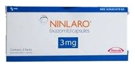

Ninlaro 3 mg Kapsül, 3 Adet

Ne için kullanılır
KT · Bölüm 1NINLARO, siyah mürekkeple kapak kısmında "Takeda" ve gövde kısmında "3 mg" ifadeleri basılı, açık gri renkli jelatin kapsüldür. Her paket 3 kapsül içerir.
NINLARO 3 mg kapsül, 3 mg iksazomibe eşdeğer 4,3 mg iksazomib sitrat içerir.
NINLARO, bir proteazom inhibitörü olan iksazomib etkin maddesini içeren bir kanser ilacıdır.
NINLARO, multipl miyelom adı verilen bir kemik iliği kanserini tedavi etmek için kullanılır. Etkin maddesi olan iksazomib, proteazomların etkisini bloke ederek çalışır. Bunlar hücre içinde proteinleri sindiren ve hücrenin hayatta kalması için önemli yapılardır. Miyelom hücreleri çok fazla protein ürettiği için proteazomların etkisini bloke etmek kanserli hücreleri öldürebilir.
Multipl miyelom, plazma hücresi adı verilen kan hücrelerini etkileyen bir kan kanseridir. Plazma hücresi normalde enfeksiyonlara karşı savaşan proteinleri üreten bir kan hücresidir. Multipl miyelom hastalarında miyelom hücreleri denen ve kemiklere zarar veren kanserli plazma hücreleri bulunur. Bu miyelom hücrelerinin ürettiği proteinler böbreklere zarar verebilir. Multipl miyelom tedavisi; miyelom hücrelerinin yok edilmesini ve hastalığın belirtilerinin hafifletilmesini kapsamaktadır.
Bu ilacı kullanmaya başlamadan önce bu KULLANMA TALİMATINI dikkatlice okuyunuz, çünkü sizin için önemli bilgiler içermektedir. • Bu kullanma talimatını saklayınız. Daha sonra tekrar okumaya ihtiyaç duyabilirsiniz. • Eğer ilave sorularınız olursa, lütfen doktorunuza veya eczacınıza danışınız. • Bu ilaç kişisel olarak sizin için reçete edilmiştir, başkalarına vermeyiniz. • Bu ilacın kullanımı sırasında, doktora veya hastaneye gittiğinizde doktorunuza bu ilacı kullandığınızı söyleyiniz. • Bu talimatta yazılanlara aynen uyunuz. İlaç hakkında size önerilen dozun dışında yüksek veya düşük doz kullanmayınız.
NINLARO daha önce multipl miyelom için en az bir tedavi görmüş yetişkin hastalarda lenalidomid ve deksametazon adlı ilaçlar ile birlikte kombine halde multipl miyelomu tedavi etmek üzere kullanılır.